车次是通用时刻表，10 月中旬以 12306 当天显示为准；二等座价格按同线常见价估。
昭化去剑门关没有直达车，打车约 45 分钟；嫌贵就打车回广元站，坐 C/D 字头 14 分钟到剑门关站（15 元），再换 7 路公交到北门。
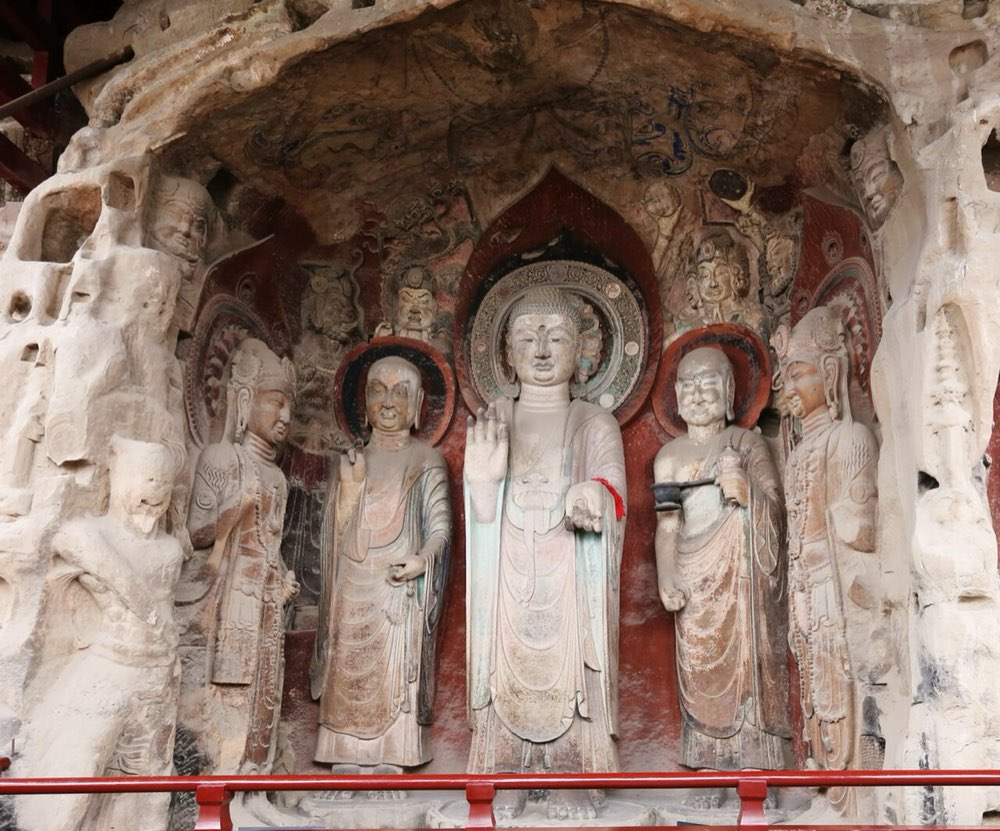
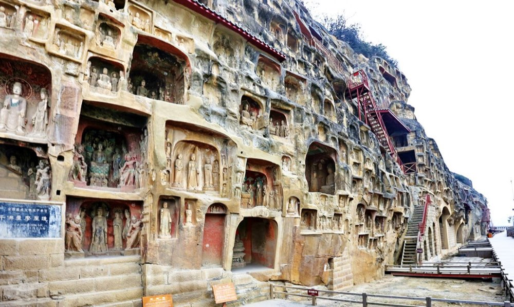
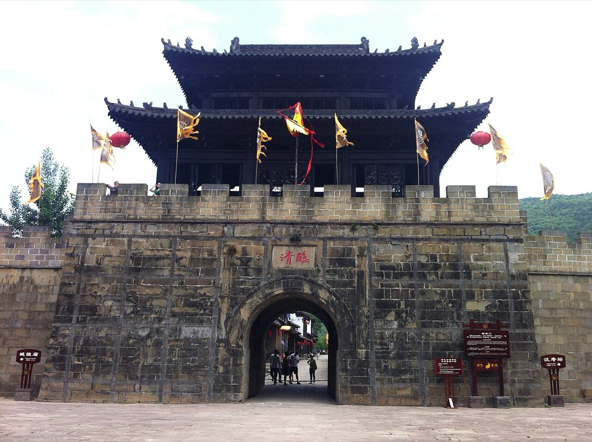
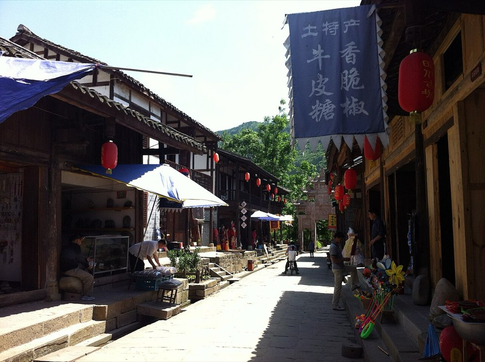
动线：北门进 → 索道上 → 梁山寺 → （猿猱道或栈道）→ 关楼 → 南门出，4–5 小时。索道、栈道、猿猱道遇阴雨大风都会停，周三是多云，正好。猿猱道和鸟道只能上行、二选一，猿猱道要提前在公众号预约。下面的地图可以点。
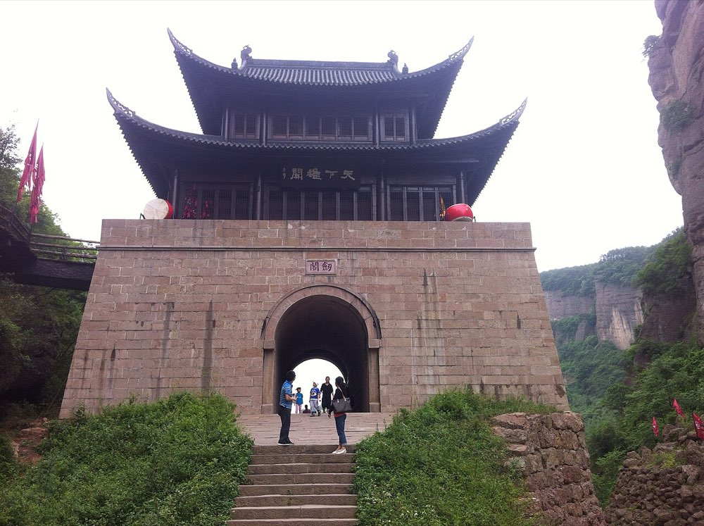
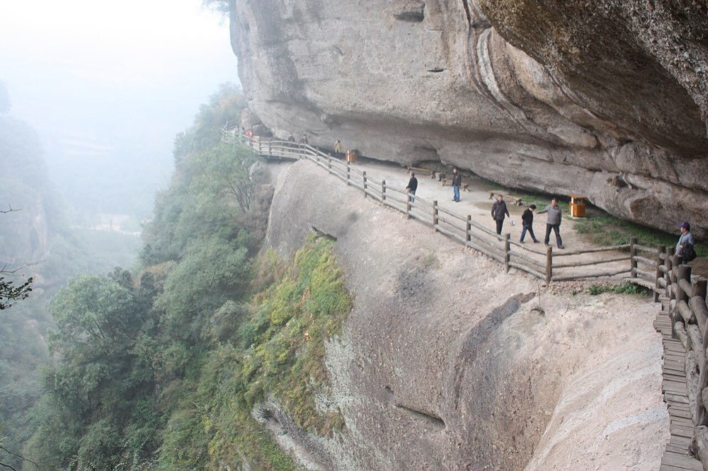
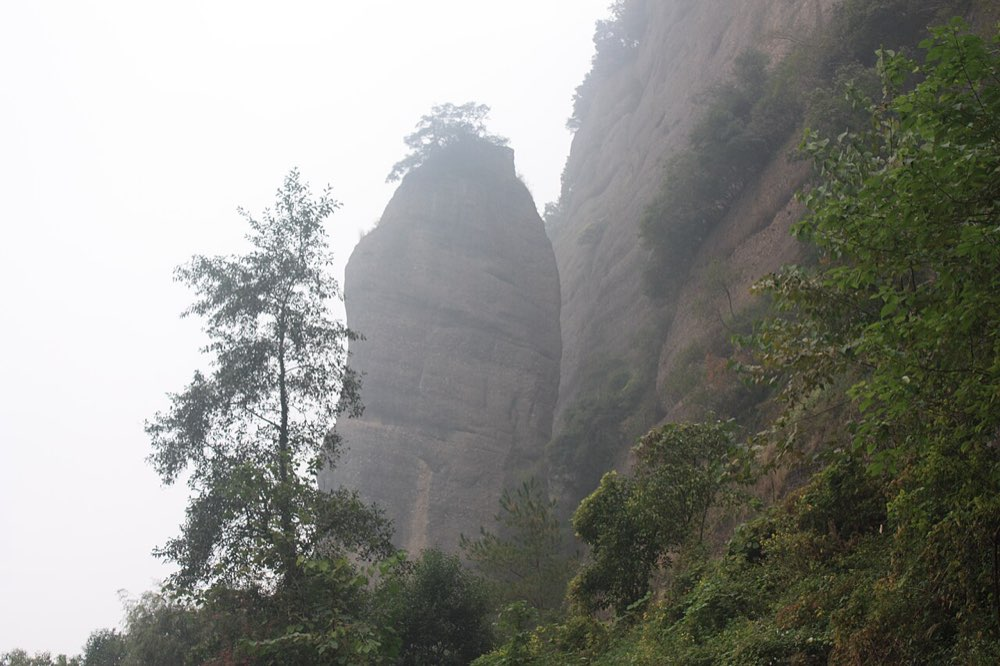
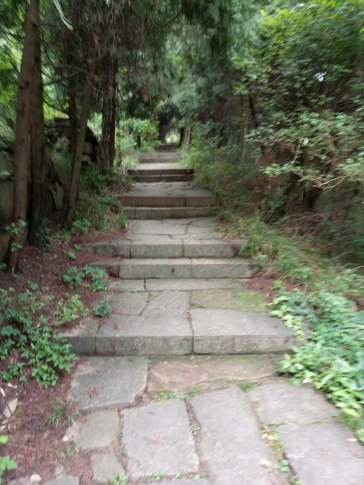
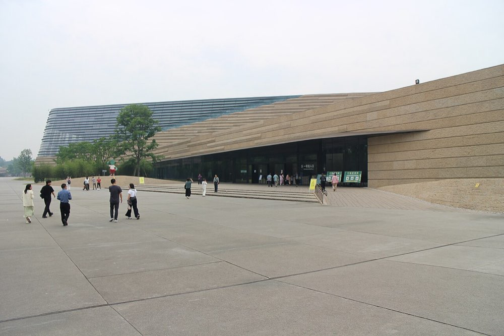
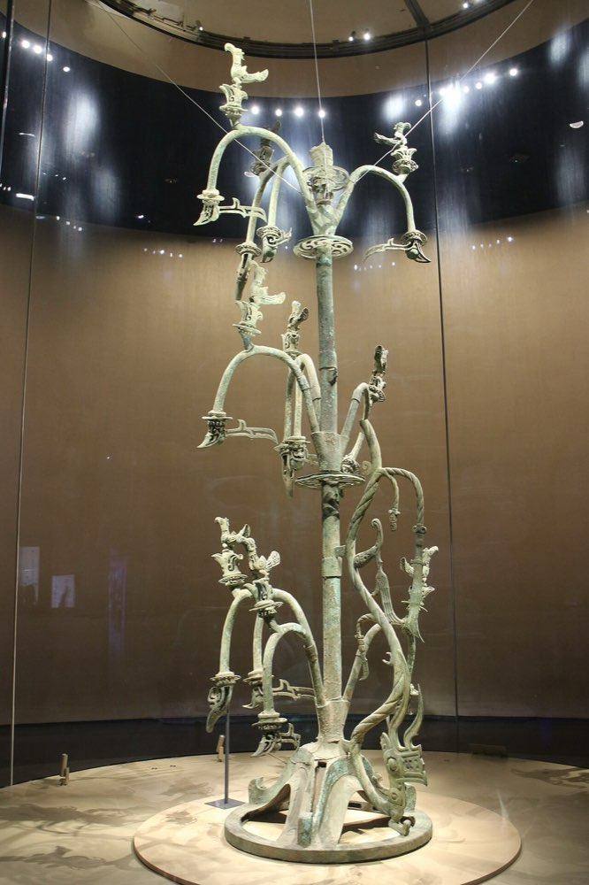
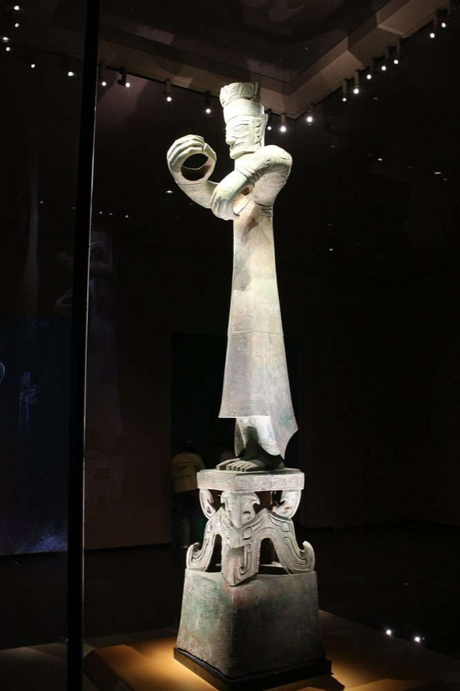
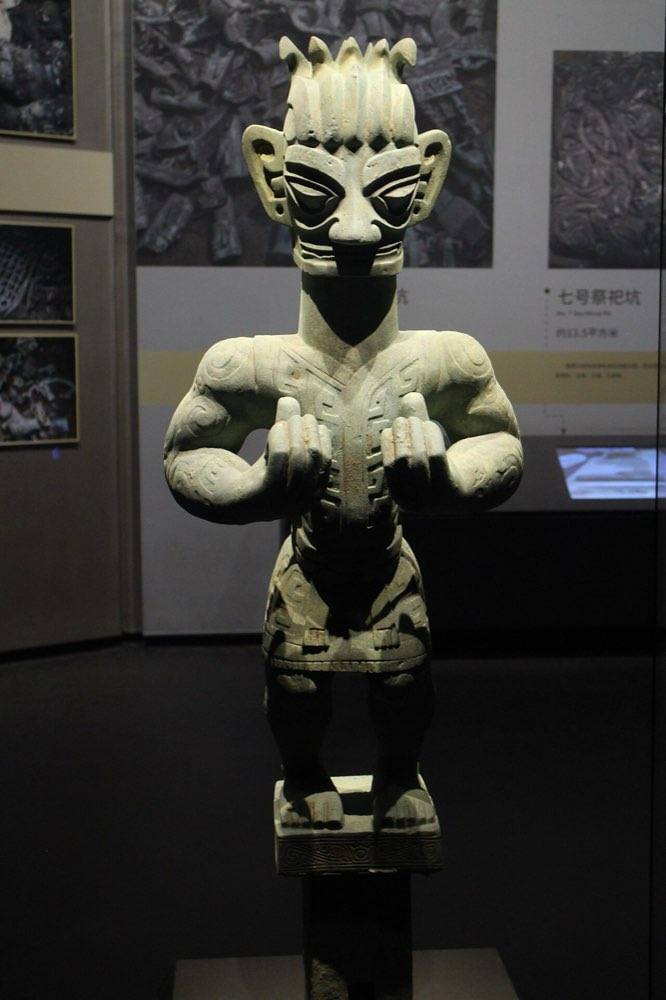
景区是两座崖壁夹着一条沟，北门在沟底、南门在山那头的镇子边。北门进，索道上山，一路往下走到关楼，南门出，不走回头路，出来就是吃豆腐的地方。
两崖之间 · 动线第 ④ 站
大剑山和小剑山中间唯一的口子，三国时诸葛亮在这里立关。现在的关楼是 2009 年重建的，但那个口子还是那个口子。
贴士：从山顶往下走到关楼大约 1 小时台阶，膝盖不好就慢点。关楼里能上二层，往南看是镇子，往北看是来路。
怎么选：昭化住古城里面，晚上和早上的古城只属于住客；广汉住三星堆附近或广汉北站附近，第二天早上进馆快。价格以订房平台 10 月实价为准，下面是携程上评分靠前的。
全勾完了，出发吧 🗿
| 项目 | 每人 | 合计 |
|---|---|---|
| 高铁 3 段152 + 40 + 230 | 422 | 844 |
| 门票皇泽寺 50 · 千佛崖 50 · 昭化套票 50 · 剑门关 105 · 索道 50 · 翠云廊 40 · 三星堆 72 · 导览 10 | 427 | 854 |
| 住宿 2 晚1 间 × 2 晚 × 350 元 | 350 | 700 |
| 吃饭 3 天每人每天 120 元 | 360 | 720 |
| 打车广元市内、广元→昭化、昭化→剑门关、镇→站、广汉北↔三星堆，按 330 元/车估，2 人分摊 | 165 | 330 |
| 合计（2 人） | ≈1,724 | ≈3,448 |
门票按 2025–2026 各平台价；车票按同线常见价估；住宿按两人一间。背出《蜀道难》能省 105。实际上下浮动两三成。
周四广元会下小雨，但那天人已经在广汉，不影响。剑门关山上比山下低三四度，索道上去先穿外套。
🚄 高铁：12306，提前 15 天放票，三段分开买。
🗿 三星堆：公众号「三星堆博物馆」（微信里搜不到就点「账号 → 服务号」），每晚 20:00 放第 5 天的票，72 元，实名，现场没有散客票。08:30–18:00，17:00 停止入馆。电子导览在公众号里买，10 元。
🏯 剑门关：公众号「剑门关景区」预约，105 元；索道单程 50，观光车 15；猿猱道 68 要单独实名预约。08:00–17:00，16:30 停售。背出《蜀道难》全文免门票。
🌲 翠云廊：40 元，默写《翠云廊》免票。南门有专线车。
🪨 千佛崖：公众号预约，约 50 元。皇泽寺：现场买，约 50 元，08:00–18:00。昭化古城：街道免费，县衙、考棚等套票约 50 元。
车次：hao86 时刻表（西安北→广元、剑门关→广汉北、广汉北→西安北，通用时刻，10 月以 12306 为准）。剑门关、翠云廊：剑门关景区指南（成都本地宝，2024）、携程景点页。三星堆：三星堆预约时间表（成都本地宝，2026）、2026-04 实测报告。广元石窟与昭化：携程、四川在线 2023–2026 游记。住宿、吃：携程 2025–2026 评分与评论。天气：中国天气网 2026-10-09。价格会变，以官方渠道为准。
实景照片来自 Wikimedia Commons：Suicasmo（三星堆新馆与文物 ×4，CC0）、剑林（剑门关栈道、石笋峰，CC BY-SA 3.0）、ping lin（关楼、昭化城楼、古城街景，CC BY-SA 3.0）、晾衣杆（翠云廊古蜀道，CC BY-SA 4.0）、Nekitarc（皇泽寺、千佛崖造像，CC BY-SA 4.0）。小人和地图是手绘风格示意，不按比例。